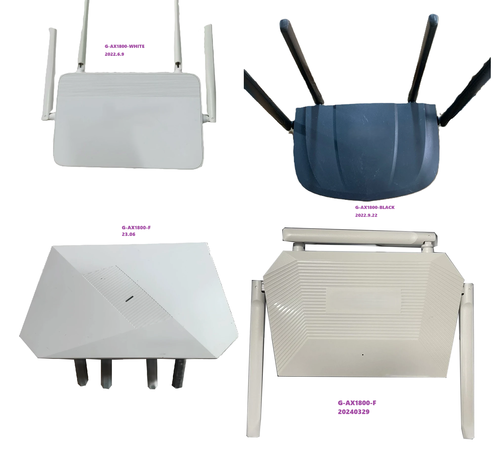
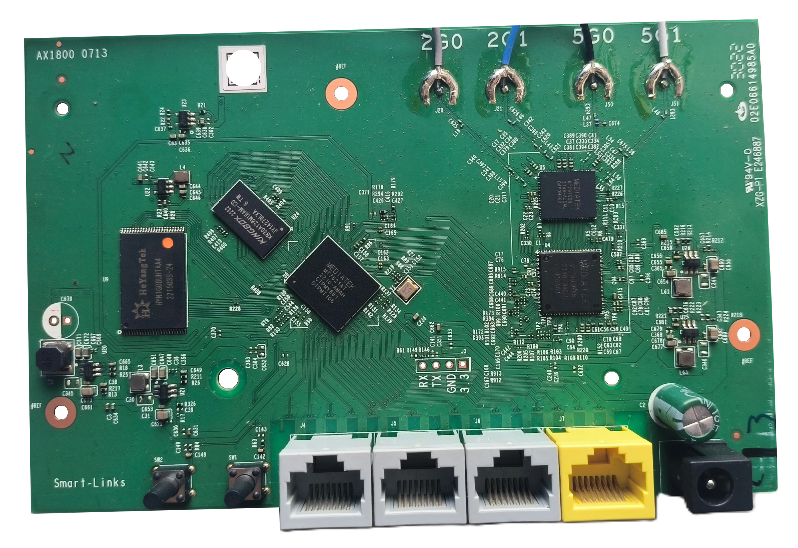

1xx86运营商的路由器，G-AX1800，方案是MT7621AT+MT7905DAN+MT7975DN
这个玩意有好几个版本，应该是有几个代工，配置差不多，但是方案混乱，名字都叫G-AX1800，还有一个带F的版本，也是差不多的，原版固件是 LEDE 17.01-SNAPSHOT 定制版本。
这个机型目前大约20~25一台（25年6月），相比已经涨价的 MT7981 路由器，性价比还是不错的。
我如果要入手一个 MT7981 路由器，最少得配置 512 MB RAM 才行，价格在 50~70 之间才能接受。
毕竟是当作玩具来着，要有可玩性，同时具备性价比。如果不玩，完全可以入手20~30一台的海思处理器的 AX3000 路由器。
版本以及硬件信息 CPU: MT7621AT@880MHz
其他信息：BUS:220MHz, XTAL: 40MHz

G-AX1800-F 23版本拆机

这个供电的电路很丐，可能出现不定时重启，无法启动，信号不稳定等问题。解决方法就是将 12v DC 接口旁边的电容更换为 470uF/25V 的固态电容，补全 RF 芯片旁边的电容为 470uF/16V 的固态电容。
G-AX1800-WHITE
G-AX1800-BLACK
G-AX1800-F
机构 G-AX1800 G-AX1800-F Flash NAND NAND-NMBM 网口顺序 WLLL LLLWL RESET 18 7 WPS/LINK 6 6
貌似带F的两个版本使用了同一个CMIT ID,但是方案有所不同，据说某一个版本使用了RTL8198D（软件版本2.0）。F-23版本只有3个Lan口，1个Wan口，但是确实是 LLLWL 的顺序
可以确定，G-AX1800-F-23这个是浪潮代工的，有一款浪潮AP6113 和这玩意一模一样。
F-24版本，貌似配置有所不同，可能是带脚的螃蟹
关于刷机 MT7621的路由器，刷机还是比较简单的
可以使用 CR660X 的 PB-BOOT ，论坛里也有人专门适配了一些固件。也能刷 集客ap246nd 或者 simax1800t
也可以使用 breed (xiaomi-r3g)，这个可以改 mac。
或者自己定制 u-boot。
开 SSH TTL 连接
上电
不停按 Link 键，直到 ttl 输出停止
输入标签上的账号和密码
编辑 /etc/config/dropbear 文件
启动 ssh 服务
TTL 刷机 准备文件
拆机，TTL 连接 RX TX GND
电脑插入 ttl 板子，查看 COM 口，打开 putty，设置好 COM 口和波特率：115200，此时不需要Open
用网线连接电脑网口和路由器的任意 LAN 口，组成最小局域网，电脑不用连接外网，全程有线局域网操作
机器上电，点击 putty 的 Open 按钮，可以看到有跑码了
跑一会，会提示按 f 进入 lede 的安全模式，按【1】【2】【3】【4】登录定制固件
按数字键 1，会出现提示输入用户名，输入路由器背后登录名：admin，然后会提示输入密码，快速输入机器背后的登录密码，即可进入定制固件的命令行
此时可以看下电脑的网络连接(ipconfig)，应该是拿到了 192.168.10.x 的 IP(x表示路由器给电脑分配的IP)
打开 hfs.exe 文件，把mtd-rw.ko和pb-boot.img添加到 hfs 中
此时在 putty 窗口的定制固件的命令行中输入: cd /tmp，切换到 tmp 目录
命令行中继续输入: wget http://192.168.10.x/mtd-rw.ko，提示文件已下载到tmp目录下
命令行中继续输入: insmod /tmp/mtd-rw.ko i_want_a_brick=1，提示 setting writeable flag
命令行中继续输入: mtd unlock Bootloader，提示 Unlocking… Bootloader，已成功解锁 Bootloader 分区
命令行中继续输入: mtd write pb-boot.img Bootloader，提示 Writing from pb-boot to Bootloader …，pb-boot 成功写入 Bootloader 分区
路由器断电、上电重启，从 putty 的窗口中已可以看到 boot 已经是 PandoraBox-Boot，接下来就可以刷机了
免拆刷机 第三台富春江路由器G-AX1800故事，暨黑色富春江免拆刷机成功
固件 富春江G-AX1800 Padavan4.4 纯净彩虹主题版
富春江G-AX1800 黑色版本 Padavan 4.4 彩虹主题
padavan-4.4_vb1980
富春江G-AX1800和海尔HAR-20S2U1云编译padavan固件
padavan-4.4_ddyjyj
【20240824】SIM AX18T/Hair HAR-20S2U1/JCG Q20/富春江G-AX1800白黑/360 T6M AsusModx
asuswrt-modx-next
因为本人入手的是带F-23的版本故此以下部分是以该机型为基础的
备份固件 思路：cat /proc/mtd，dd if 备份，scp/nc 传回电脑
PC
1 2 nc -l -p 12345 > backup.img scp root@192.168.1.1:/tmp/backup.img ~/Downloads/
1 2 3 4 cat /proc/mtddd if =/dev/mtdx of=/tmp/mtdx.imgtftp -p -l /tmp/mtdx.img 192.168.10.x nc 192.168.10.x 12345 < /dev/mtdx
提取 DTS 思路：备份 kernel 分区，然后使用 extract-dtb 提取 dtb，dtc 反编译成 dts
再根据这个 dts 进行修改，以适配不同的系统。
参考
g-ax1800-b.dts
定制 U-Boot 一种在线定制 MT7621 u-boot 的方法
uboot-mt7621
定制系统 此处介绍3种系统的适配方法。
定制 OpenWrt 思路：找一个相似机型，查看适配代码提交记录，依葫芦画瓢。
参考
这是适配 SIMAX1800T 的提交，还可以查看 CR660X、TX1801 等机型的提交。
Commit f7f9203
Commit 6361a95
定制 Asuswrt 参考
Commit 8693440
定制 Padavan 参考
Commit 4499bd2
关于 F 版本 我入手的是 F-23 版本，配置和不带 F 的版本一样，虽然目前没人玩机，但是没关系，适配的工作还是不怎么困难
适配思路：ttl 获取启动信息，开 SSH，提取 DTS，适配 OpenWrt/Asuswrt 等系统
关于 F-24 版本，该版本我没有入手，因为配置不确定（可能是带脚的螃蟹），以及我不太喜欢这个外观。
综合来看黑色版本做工以及刷机资源都比较丰富，但是我不太喜欢这个外观，白色的版本也不好看，看起来很廉价，这个 F-23 的版本，白色外壳，可立着放也可以卧着放，我比较喜欢，最后18块入手。
说明 该机型使用的 NAND 是国产 HeYangTek 的 NAND，实际为海力士黑片，并开启了 NMBM，故此尽管配置与小米 CR660X 系列差不多，但是小米并没有使用 NMBM，如果颗粒有坏块，就不能使用它的 breed 或 pb-boot，也不能直接刷它的固件，尽管能够启动，但是长时间使用必将导致坏块的故障。
需要单独适配开启 NMBM 的 UBOOT，系统也需要适配开启 NMBM。
参看颗粒是否有坏块：在 uboot 下输入
根据输出的提示判断是否有坏块。
UBOOT
LEDE
F 版是否能够免拆刷机，我推测是可以的，为什么是推测呢，因为等我找到这个免拆刷机的教程时，我已经完成了LEDE的适配工作并刷入了系统，所以我没有尝试过免拆刷机。
能够适配的系统有：
padavan 系列暂时没有适配，因为这个机型开启了 NMBM，padavan 系统似乎没有适配 NMBM 的代码。
改密码，开ssh 见参考，有一种免拆开启 ssh 和 telnet 的办法。
先启动机器，led 发光后迅速连接 TTL 至电脑（同时打开已经配置好的串口），然后不停按 reset 进行中断
当提示出进入 openwrt failsafe时，输入1并回车，此时进入 failsafe
但是此时 dhcp 以及 uci 皆不可使用，即没有网络连接
需要输入 reboot 当重启后进入 uboot 的 bootmenu 界面，此时迅速在终端使用上下键中断启动，然后选择 boot 系统。
重启后，可以正常连接网络，使用 uci。
然后参照以下命令修改 root 密码并开启 ssh。
1 2 3 4 5 6 7 8 9 10 11 12 13 14 15 16 17 18 19 20 21 22 23 24 25 26 27 28 29 30 31 BusyBox v1.25.1 () built-in shell (ash) _________ / /\ _ ___ ___ ___ / LE / \ | | | __| \| __| / DE / \ | |__| _|| |) | _| /________/ LE \ |____|___|___/|___| lede-project.org \ \ DE / \ LE \ / ----------------------------------------------------------- \ DE \ / Reboot (17.01-SNAPSHOT, unknown) \________\/ ----------------------------------------------------------- root@LEDE:~# mount_root root@LEDE:~# passwd root@LEDE:~# vi /etc/config/dropbear root@LEDE:~# cat /etc/config/dropbear config dropbear option PasswordAuth 'on' option RootPasswordAuth 'on' option Port '22' option Interface 'lan' root@LEDE:~# vi /etc/rc.local root@LEDE:~# cat /etc/rc.local # Put your custom commands here that should be executed once # the system init finished. By default this file does nothing. /etc/init.d/dropbear start /etc/init.d/dropbear restart exit 0 root@LEDE:~# reboot
刷入 U-Boot 使用 TTL 连接，使用 putty 打开串口，设置波特率为 115200
上电，等待串口输出，进入 uboot 的 bootmenu 界面
选择 upgrade bootloader
此时电脑端打开 tftpd64.exe，设置好 tftp 目录，放入 uboot.bin 文件
然后终端回车，将会提示需要配置的网络信息，根据提示配置 server ip、mask 以及 gateway，最后输入 uboot.bin 的文件名，回车即可开始刷入 uboot
刷入成功将会自动重启，重启后再次进入 uboot 的 bootmenu 界面，然后将路由器断电。
原版系统开启 ssh 后，与不带 F 的版本一样，使用 mtd 命令刷入 uboot。
此处不再赘述。
进入 UBOOT failsafe 模式 断电的时候，按住 reset 键，然后上电，led 大概闪烁4~6次的时候，松开。
电脑端配置
ip 192.168.1.2
mask 255.255.255.0
gateway 192.168.1.1
浏览器开无痕模式（防止缓存影响），访问 192.168.1.1，进入 UBOOT 的 failsafe 界面，上传固件即可，根据提示信息进行操作。
有时候受到浏览器缓存的影响，可能导致失败，此时建议清除浏览器缓存，或者换一个浏览器，必要时打开浏览器开发者工具，查看控制台信息，正常情况下没有错误信息。
适配 lede 该机型原版就是 LEDE-17 定制版系统，故此也适配 LEDE，使用最新的 LEDE R25.5.25(COMMIT ID:045b5eb8b89709fb79d9ca82e78ced8704418f18)进行适配，环境为 WSL2 UBUNTU22.04
mac offset 打开备份出的 factory 分区，使用 hex 编辑器查看
结合解包的原厂固件中的信息，可以得到以下信息：
1 2 3 4 lan_mac_offset=0x3FFF4 wan_mac_offset=0x3FFFA label_mac=wan_mac wifi-base-mac=0x4
wifi-base-mac 是 eeprom 中的 mac 地址偏移，也是 2G 的 mac 地址偏移，而 5G 是在 2G 的基础上加 5。
适配代码 1 2 3 4 fcj,g-ax1800-f|\ xiaomi,mi-router-cr660x) ubootenv_add_uci_config "/dev/mtd1" "0x0" "0x10000" "0x20000" ;;
1 2 3 4 5 6 7 8 9 10 11 12 13 14 15 16 17 18 19 20 21 22 23 24 25 26 27 28 29 30 31 32 33 34 35 36 37 38 39 40 41 42 43 44 45 46 47 48 49 50 51 52 53 54 55 56 57 58 59 60 61 62 63 64 65 66 67 68 69 70 71 72 73 74 75 76 77 78 79 80 81 82 83 84 85 86 87 88 89 90 91 92 93 94 95 96 97 98 99 100 101 102 103 104 105 106 107 108 109 110 111 112 113 114 115 116 117 118 119 120 121 122 123 124 125 126 127 128 129 130 131 132 133 134 135 136 137 138 139 140 141 142 #include "mt7621.dtsi" #include <dt-bindings/gpio/gpio.h> #include <dt-bindings/input/input.h> / { compatible = "fcj,g-ax1800-f" , "mediatek,mt7621-soc" ; model = "FCJ G-AX1800-F" ; aliases { led-boot = &led_status_red; led-failsafe = &led_status_green; led-running = &led_status_green; led-upgrade = &led_status_red; label-mac-device = &gmac0; }; chosen { bootargs = "console=ttyS0,115200" ; bootargs-override = "console=ttyS0,115200" ; }; leds { compatible = "gpio-leds" ; led_status_red: sys_red { label = "red:sys" ; gpios = <&gpio 13 GPIO_ACTIVE_HIGH>; }; led_status_green: sys_green { label = "green:sys" ; gpios = <&gpio 15 GPIO_ACTIVE_HIGH>; }; }; keys { compatible = "gpio-keys" ; reset { label = "reset" ; gpios = <&gpio 7 GPIO_ACTIVE_HIGH>; linux,code = <KEY_RESTART>; }; wps { label = "wps" ; gpios = <&gpio 6 GPIO_ACTIVE_HIGH>; linux,code = <KEY_WPS_BUTTON>; }; }; }; &nand { status = "okay" ; mediatek,nmbm; mediatek,bmt-max-ratio = <1 >; mediatek,bmt-max-reserved-blocks = <64 >; mediatek,bmt-remap-range = <0x0000000 0x0a00000 >; partitions { compatible = "fixed-partitions" ; #address-cells = <1> ; #size-cells = <1> ; partition@0 { label = "Bootloader" ; reg = <0x0000000 0x0080000 >; read-only; }; partition@80000 { label = "Config" ; reg = <0x0080000 0x0080000 >; }; factory: partition@100000 { label = "Factory" ; reg = <0x0100000 0x0080000 >; read-only; }; partition@180000 { label = "kernel" ; reg = <0x180000 0x800000 >; }; partition@980000 { label = "ubi" ; reg = <0x980000 0x6e80000 >; }; }; }; &pcie { status = "okay" ; }; &pcie1 { wifi@0 ,0 { compatible = "mediatek,mt76" ; reg = <0x0000 0 0 0 0 >; mediatek,mtd-eeprom = <&factory 0x0 >; }; }; &gmac0 { mtd-mac-address = <&factory 0x3fff4 >; }; &gmac1 { mtd-mac-address = <&factory 0x3fffa >; status = "okay" ; }; &gsw { mediatek,portmap = "lllwl" ; status = "okay" ; }; &hnat { mtketh-wan = "eth1" ; mtketh-ppd = "eth0" ; mtketh-lan = "eth0" ; mtketh-max-gmac = <2 >; /delete -property/ mtkdsa-wan-port; }; &switch0 { status = "disabled" ; }; &state_default { gpio { groups = "jtag" , "uart3" , "wdt" ; function = "gpio" ; }; };
1 2 3 4 5 6 7 8 9 10 fcj,g-ax1800-f) ucidef_add_switch "switch0" \ "0:lan" "1:lan" "2:lan" "3:wan" "6u@eth0" "5u@eth1" ;; fcj,g-ax1800-f|\ xiaomi,mi-router-cr660x) lan_mac=$(cat /sys/class/net/eth0/address) wan_mac=$(macaddr_add "$lan_mac " -1) ;;
关于分区，原厂与小米类似使用 Bootloader + Config + Factory 这种格式，可以替换成 uboot + uboot-env + factory；原厂使用了 firmware + firmware1 + rootfs + rootfs_data，此处合并为 kernel + ubi。关于 leds，原版 dts 配置的绿色的 gpio 实际并没有起作用，原版系统默认关闭的，该 greenled 只在启动时常亮，以及交替闪烁时发光，故此参照原版进行配置。关于网口交换机，原版系统使用 lllwl 进行配置，尽管该机型是 3lan + 1wan。
将该机型型号加入即可。
1 2 3 4 fcj,g-ax1800-f) [ "$PHYNBR " = "1" ] && \ macaddr_add "$(mtd_get_mac_binary Factory 0x4) " 5 > /sys${DEVPATH} /macaddress ;;
1 2 3 4 5 6 7 8 9 10 11 12 13 14 15 16 17 18 define Device/fcj_g-ax1800-f $(Device/dsa-migration) $(Device/uimage-lzma-loader) DEVICE_VENDOR := FCJ DEVICE_MODEL := G-AX1800-F BLOCKSIZE := 128k PAGESIZE := 2048 UBINIZE_OPTS := -E 5 KERNEL_SIZE := 8192k IMAGE_SIZE := 121344k IMAGES += factory.bin IMAGE/sysupgrade.bin := sysupgrade-tar | append-metadata IMAGE/factory.bin := append-kernel | pad-to $$(KERNEL_SIZE) | append-ubi | \ check-size DEVICE_PACKAGES += kmod-mt7915-firmware wpad-openssl uboot-envtools SUPPORTED_DEVICES += fcj,g-ax1800-f endef TARGET_DEVICES += fcj_g-ax1800-f
超频 我已经实测了 160MHz 的无线，对于 7615E，这是无效的，可能在 AC 型号的 7615N 上有效果。
首先，通过定制 uboot，将 CPU 提升到 1100MHz，因为供电电路比较丐，建议不要超频太高。
然后，编译 OpenWrt 时，修改 target/linux/ramips/patches-5.10/322-mt7621-fix-cpu-clk-add-clkdev.patch
1 2 3 4 5 6 7 8 9 10 11 12 13 14 15 16 17 18 19 20 21 22 23 24 25 26 27 28 29 30 31 32 33 34 35 36 37 38 39 40 41 42 43 44 45 46 47 48 49 50 51 52 53 54 55 56 57 58 59 60 61 62 63 64 65 66 67 68 69 70 71 72 73 74 75 76 77 78 79 80 81 82 83 84 85 86 87 88 89 90 91 92 93 94 95 96 97 98 99 100 101 102 103 104 105 106 107 108 109 110 111 112 113 114 115 116 117 118 119 120 121 122 123 124 125 126 127 128 129 130 131 132 133 134 135 136 137 138 139 140 141 142 143 144 145 146 147 148 149 150 151 152 153 154 155 156 157 158 159 160 161 162 163 164 165 166 167 168 169 170 171 172 173 174 175 176 177 178 179 180 181 182 183 184 185 186 187 188 189 190 @@ -17,6 +17,10 @@ #define SYSC_REG_CHIP_REV 0x0c #define SYSC_REG_SYSTEM_CONFIG0 0x10 #define SYSC_REG_SYSTEM_CONFIG1 0x14 +#define SYSC_REG_CLKCFG0 0x2c +#define SYSC_REG_CUR_CLK_STS 0x44 + +#define MEMC_REG_CPU_PLL 0x648 #define CHIP_REV_PKG_MASK 0x1 #define CHIP_REV_PKG_SHIFT 16 @@ -24,6 +28,22 @@ #define CHIP_REV_VER_SHIFT 8 #define CHIP_REV_ECO_MASK 0xf +#define XTAL_MODE_SEL_MASK 0x7 +#define XTAL_MODE_SEL_SHIFT 6 + +#define CPU_CLK_SEL_MASK 0x3 +#define CPU_CLK_SEL_SHIFT 30 + +#define CUR_CPU_FDIV_MASK 0x1f +#define CUR_CPU_FDIV_SHIFT 8 +#define CUR_CPU_FFRAC_MASK 0x1f +#define CUR_CPU_FFRAC_SHIFT 0 + +#define CPU_PLL_PREDIV_MASK 0x3 +#define CPU_PLL_PREDIV_SHIFT 12 +#define CPU_PLL_FBDIV_MASK 0x7f +#define CPU_PLL_FBDIV_SHIFT 4 + #define MT7621_DRAM_BASE 0x0 #define MT7621_DDR2_SIZE_MIN 32 #define MT7621_DDR2_SIZE_MAX 256 @@ -9,12 +9,17 @@ #include <linux/init.h> #include <linux/slab.h> #include <linux/sys_soc.h> +#include <linux/clk.h> +#include <linux/clkdev.h> +#include <linux/clk-provider.h> +#include <dt-bindings/clock/mt7621-clk.h> #include <asm/mipsregs.h> #include <asm/smp-ops.h> #include <asm/mips-cps.h> #include <asm/mach-ralink/ralink_regs.h> #include <asm/mach-ralink/mt7621.h> +#include <asm/time.h> #include <pinmux.h> @@ -105,11 +110,93 @@ static struct rt2880_pmx_group mt7621_pi { 0 } }; +static struct clk *clks[MT7621_CLK_MAX]; +static struct clk_onecell_data clk_data = { + .clks = clks, + .clk_num = ARRAY_SIZE(clks), +}; + phys_addr_t mips_cpc_default_phys_base(void) { panic("Cannot detect cpc address"); } +static struct clk *__init mt7621_add_sys_clkdev( + const char *id, unsigned long rate) +{ + struct clk *clk; + int err; + + clk = clk_register_fixed_rate(NULL, id, NULL, 0, rate); + if (IS_ERR(clk)) + panic("failed to allocate %s clock structure", id); + + err = clk_register_clkdev(clk, id, NULL); + if (err) + panic("unable to register %s clock device", id); + + return clk; +} + +void __init ralink_clk_init(void) +{ + u32 syscfg, xtal_sel, clkcfg, clk_sel, curclk, ffiv, ffrac; + u32 pll, prediv, fbdiv; + u32 xtal_clk, cpu_clk, bus_clk, i; + const static u32 prediv_tbl[] = {0, 1, 2, 2}; + + syscfg = rt_sysc_r32(SYSC_REG_SYSTEM_CONFIG0); + xtal_sel = (syscfg >> XTAL_MODE_SEL_SHIFT) & XTAL_MODE_SEL_MASK; + + clkcfg = rt_sysc_r32(SYSC_REG_CLKCFG0); + clk_sel = (clkcfg >> CPU_CLK_SEL_SHIFT) & CPU_CLK_SEL_MASK; + + curclk = rt_sysc_r32(SYSC_REG_CUR_CLK_STS); + ffiv = (curclk >> CUR_CPU_FDIV_SHIFT) & CUR_CPU_FDIV_MASK; + ffrac = (curclk >> CUR_CPU_FFRAC_SHIFT) & CUR_CPU_FFRAC_MASK; + + if (xtal_sel <= 2) + xtal_clk = 20 * 1000 * 1000; + else if (xtal_sel <= 5) + xtal_clk = 40 * 1000 * 1000; + else + xtal_clk = 25 * 1000 * 1000; + + switch (clk_sel) { + case 0: + cpu_clk = 500 * 1000 * 1000; + break; + case 1: + pll = rt_memc_r32(MEMC_REG_CPU_PLL); + pll &= ~(0x7ff); + pll |= (0x362); + rt_memc_w32(pll,MEMC_REG_CPU_PLL); + for(i=0 ; i<1024 ; i++); + fbdiv = (pll >> CPU_PLL_FBDIV_SHIFT) & CPU_PLL_FBDIV_MASK; + prediv = (pll >> CPU_PLL_PREDIV_SHIFT) & CPU_PLL_PREDIV_MASK; + cpu_clk = ((fbdiv + 1) * xtal_clk) >> prediv_tbl[prediv]; + break; + default: + cpu_clk = xtal_clk; + } + + cpu_clk = cpu_clk / ffiv * ffrac; + bus_clk = cpu_clk / 4; + + clks[MT7621_CLK_CPU] = mt7621_add_sys_clkdev("cpu", cpu_clk); + clks[MT7621_CLK_BUS] = mt7621_add_sys_clkdev("bus", bus_clk); + + pr_info("CPU Clock: %dMHz\n", cpu_clk / 1000000); + mips_hpt_frequency = cpu_clk / 2; +} + +static void __init mt7621_clocks_init_dt(struct device_node *np) +{ + of_clk_add_provider(np, of_clk_src_onecell_get, &clk_data); +} + +CLK_OF_DECLARE(mt7621, "mediatek,mt7621-pll", mt7621_clocks_init_dt); + void __init ralink_of_remap(void) { rt_sysc_membase = plat_of_remap_node("mtk,mt7621-sysc"); @@ -9,14 +9,14 @@ #include <linux/of.h> #include <linux/of_clk.h> -#include <linux/clocksource.h> +#include <asm/time.h> #include "common.h" void __init plat_time_init(void) { ralink_of_remap(); - + ralink_clk_init(); of_clk_init(NULL); timer_probe(); } @@ -0,0 +1,18 @@ +/* + * Copyright (C) 2018 Weijie Gao <hackpascal@gmail.com> + * + * This program is free software; you can redistribute it and/or modify + * it under the terms of the GNU General Public License version 2 as + * published by the Free Software Foundation. + * + */ + +#ifndef __DT_BINDINGS_MT7621_CLK_H +#define __DT_BINDINGS_MT7621_CLK_H + +#define MT7621_CLK_CPU 0 +#define MT7621_CLK_BUS 1 + +#define MT7621_CLK_MAX 2 + +#endif /* __DT_BINDINGS_MT7621_CLK_H */
1100MHz 对应 pll |= (0x362);
0x362 = 1100Mhz/20Mhz -1 = 54
54*16+2 = 866
866转为十六进制就是0x362
相应的，
1000Mhz–0x312
1200Mhz–0x3B2
如果不稳定，根据自己的需求同步调整 UBoot 和 OpenWrt 的频率。
实测改完电路+超频，无线能够达到 600Mbps 左右速度，而在之前的情况下，无线仅仅能够达到 300Mbps 左右速度，并且不稳定。
开启 nmbm 这个 mtk 的 bmt 功能，在 lede 的 5.10 内核上实际并没有开启（即便dts中定义了）
但是另一个 ImmortalWrt18.06（使用了mtk 驱动而非开源驱动的第三方开源） 确实是开启了
因为是nmbm机型，所以需要开启
参考 Commit b861319
此外，可以将 ImmortalWrt18.06 的相关 qos 功能移植过来（虽然对于mt7621没啥用就是了）
适配 AsusWrt 我很好奇，25年了，256M RAM 的 MT7621 处理器，能不能跑得动 AsusWrt 系统。
asuswrt-modx-next
只是进行了适配的代码，并没有进行编译。
因为现在只有笔记本，台式机目前不在我身边，所以暂时没有编译。如果你有编译环境，可以尝试编译一下，看看能不能跑得动。
如果你有编译好的固件，可以发给我看一下。
如果跑不动，提交 Issue，或者 Pull Request。
6月29日更新
做好环境编译好了系统，但是设备却又不在我这里了，编译中间还是有点波折的，因为这玩意好多地方和普通的设备不一样，比如各种高电平，还有 nmbm 什么的。现在已经将成品发布到了 Release 页面，但是能不能用，我也不晓得。
参考资料 富春江 G-AX1800 & G-AX1800-F 差别
友华WR1200JS刷入breed教程
富春江G-AX1800拆机TTL刷PB-BOOT教程
富春江ttl刷机
第二台富春江路由器G-AX1800故事续，刷机成功，拆机新刷法
新华三 H3C TX1800 Plus / TX1801 Plus / TX1806 OpenWrt 及刷机教程
中国移动G-AX1800-F免拆开SSH和telnet